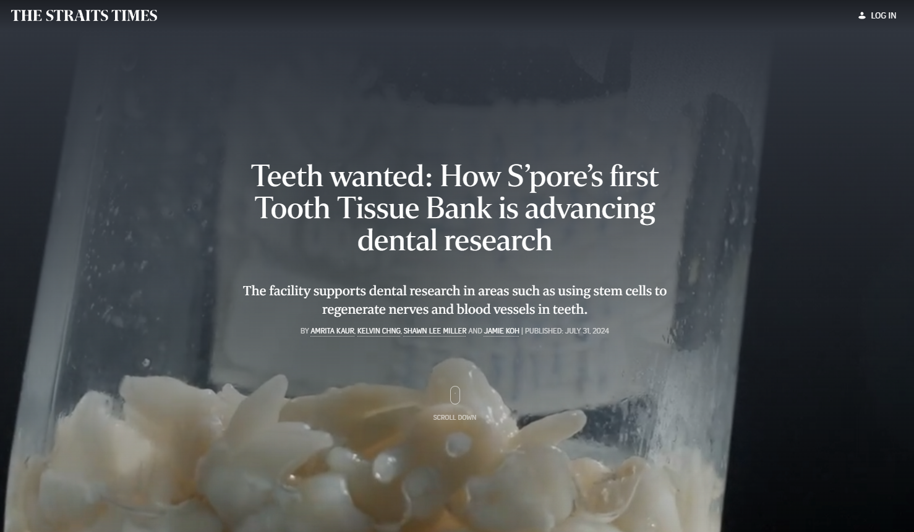

The Straits Times spotlights Singapore's first Tooth Tissue Bank and its role in advancing dental research
Singapore's national newspaper, The Straits Times, featured the NUCOHS Tooth Tissue Bank — Singapore's first dedicated repository of extracted human teeth for research, established at the National University Centre for Oral Health Singapore (NUCOHS) with the support of NUS Dentistry.
What was once routinely discarded as biomedical waste is now being transformed into a valuable research resource.

Through a structured donation process, patients undergoing tooth extractions at NUCOHS are invited to contribute their extracted teeth for science. Donations are voluntary, donors remain anonymous to researchers, and samples are handled under established ethical and regulatory frameworks, including Singapore's Human Biomedical Research Act.
After collection, the teeth are decontaminated, stored, cleaned, sorted and catalogued by the Clinical Research Unit. Specimens are organised by tooth type — including incisors, canines, premolars and molars — and further classified according to their condition, such as intact, restored or carious teeth.
This creates a ready supply of biologically relevant samples for researchers who would otherwise spend months, or even years, recruiting patients and collecting teeth before a project could begin.
The Tooth Tissue Bank is more than a repository. It is research infrastructure.
The value of the Tooth Tissue Bank goes beyond storage. Teeth can be sectioned, trimmed and prepared into precise geometries for different experimental needs — from testing new restorative materials and bonding systems to studying caries, tooth structure, microbial infiltration and regenerative approaches.
As highlighted in the feature, one major research direction is dental pulp tissue engineering, where stem cells from extracted teeth may help regenerate the living soft tissue inside the tooth, including nerves and blood vessels.
By centralising access to high-quality donated teeth, the NUCOHS Tooth Tissue Bank removes a major bottleneck in translational dental research. It gives scientists faster access to standardised human dental tissues, supports more reproducible experiments, reduces biomedical waste and strengthens the link between clinical care and laboratory discovery.
In a field where new materials, therapies and regenerative technologies must be tested on real dental tissues before reaching patients, the Tooth Tissue Bank is more than a repository. It is research infrastructure — turning extracted teeth into a platform for developing better, safer and longer-lasting solutions for oral health.